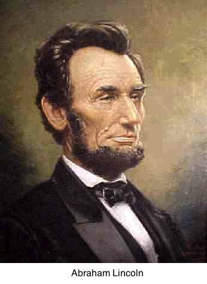

Les chiffres de la guerre de Sécession
Un peu d'histoire

Lorsque la guerre de Sécession éclate le 12 avril 1861 par l'attaque
des forces confédérées (les Etats du Sud) contre Fort Sumter, une installation militaire de l'Union dans la baie de Charleston en Caroline du Sud,
la cryptographie "ancienne" est à bout de souffle… Depuis le XVIè siècle et les chiffres de substitution polyalphabétique
"à la Vigenère", plus rien ou presque n'a été inventé. Ce sont toujours les nomenclatures, où on remplace lettres,
syllabes et mots par des chiffres à l'aide de dictionnaires, qui dominent, comme sous Henri IV, Louis XIV ou Napoléon.
Certains pays, comme l'Angleterre, sont en avance, sachant notamment grâce à Babbage comment casser les chiffres
de Vigenère ou ayant à disposition des chiffres polygraphiques comme le chiffre de Playfair. Mais ce n'est pas le cas des Etats-Unis
(qui, en cette période de trouble, méritaient alors très peu leur nom).
Le pire fut certainement le fait des Sudistes. En raison de la structure confédérale de leur organisation politique, chacun faisait à peu près ce qu'il voulait : il y eut du chiffre de Vigenère (cette technique était utilisée au moyen de cadrans chiffrants), mais l'utilisation répétée des mêmes clés ou de clés faites de noms communs ou de noms propres (comme BALTIMORE) annihilaient presque totalement la sécurité du chiffre.
Il y eut aussi des dictionnaires utilisés comme codes et il y eut même du « Jules César »! De plus, les Sudistes ne chiffraient
que les parties du message qu'ils désiraient garder secrètes. Ceci, en révélant le contexte du message, favorise l'attaque par mot probable.
Les Nordistes furent moins médiocres, d'abord en raison de leur organisation centralisée. Ainsi, le gouverneur de l'Ohio a compris dès le début
de la guerre l'intérêt d'assurer la confidentialité de ses communications télégraphiques avec ses homologues de l'Illinois et de l'Indiana. Il confie
cette mission à Anson Stager, le directeur général de la compagnie Western Union qui vient d'être créé en 1856. A la demande du gouverneur, il met au point
un chiffre simple et efficace, le chiffre à parcours de l'Union, qui est un chiffre de transposition sur les mots. Ce chiffre
se révèle si efficace qu'il est appelé en octobre 1861 à Washington et nommé à la tête du département militaire de télégraphie.
Stager s'entoure à Washington de plusieurs opérateurs,
dont les plus célèbres sont David Bates, Charles Tinker et Albert Chandler. Ces trois jeunes hommes sont chargés du décryptement des messages des confédérés.
Les informations qu'ils obtiennent sont si importantes (par exemple, ils déjouent plusieurs complots ou découvrent des lettres de Sudistes qui projetaient d'imprimer
des bons et de l'argent pour les Etats confédérés) qu'ils travaillent sous la direction directe, débonnaire et extraordinairement familière du Président Lincoln,
que l'on voit régulièrement traverser la pelouse en direction de leur bâtiment.
Le chiffre à parcours de l'Union
Le chiffre imaginé par Stager est un chiffre de transposition mais dans lequel on change directement l'ordre des mots, et non celui des lettres.
Le procédé comportait plusieurs étapes :
- d'abord, le choix d'un mot-clé convenu, comme GARDE ou IBRAHIM. Ce mot-clé désigne la taille du tableau de transposition (nombre de colonnes), ainsi que la façon dont seront relevées les colonnes.
- certains mots très connus sont remplacés par d'autres, convenus à l'avance. Par exemple, on peut imaginer que l'expression "président Lincoln" soit remplacé par EVE, le mot "gouverneur" par TRACTEUR, le mot "Mississipi" par CHAISE.
- le texte est disposé dans le tableau de transposition, ligne par ligne, chaque mot remplissant une case du tableau. Des mots sans signification (mots nuls) sont éventuellement ajoutés à la fin du message pour obtenir réellement un tableau rectangulaire.
- les colonnes sont relevées une à une, et, suivant le procédé choisi, elles peuvent êtres lues de haut en bas ou de bas en haut. Pour renforcer la sécurité, un autre mot sans signification est ajouté après les mots pris dans chaque colonne.
Le président Lincoln souhaite rencontrer le gouverneur de l'Ohio. Il souhaite envoyer des renforts dans le Mississipi.On applique les règles précédentes. D'abord, la substitution donne :
LE EVE SOUHAITE RENCONTRER LE TRACTEUR DE L'OHIO. IL SOUHAITE ENVOYER DES RENFORTS DANS LE CHAISE.On suppose ensuite que l'on a choisi la clé GARDE. Celle-ci exige qu'on écrive le message dans un tableau comportant 5 colonnes.
Remarquons qu'on a complété la dernière ligne par des mots nuls (lit, bureau et table). On relève ensuite le contenu des colonnes. La clé GARDE exige qu'on lise dans l'ordre la première colonne de bas en haut, la deuxième de haut en bas, la cinquième de bas en haut, la quatrième de haut en bas, et pour finir la troisième de bas en haut. Entre chaque colonne est inséré un mot nul (en rouge ci-après), et le message final commence par la clé, le mot GARDE. On obtient donc :
LE EVE SOUHAITE RENCONTRER LE TRACTEUR DE L' OHIO IL SOUHAITE ENVOYER DES RENFORTS DANS LE CHAISE LIT BUREAU TABLE
GARDE LE SOUHAITE TRACTEUR LE GENTIL EVE DE ENVOYER CHAISE TRUC TABLE DANS IL LE FORT RENCONTRER OHIO RENFORTS BUREAU HERBE LIT DES L' SOUHAITE GRATTERIl est étonnant qu'un chiffre si simple, qui ne cache finalement pas grand chose, ait résisté aux Sudistes jusqu'à la fin de la guerre en 1865! Sources : Casseurs de code, de Pincok et Frary, et les messages de Nerosson sur le forum.
Chiffrez vos messages comme pendant la guerre de Sécession
Le formulaire suivant vous permet de chiffrer vos messages avec la méthode décrite précédemment,
sans la permutation initiale.
Consulter aussi